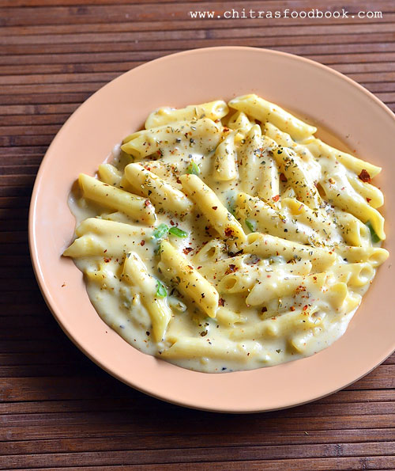

White sauce pasta

The Ultimate Comfort Food
White sauce pasta, or béchamel sauce pasta, is a rich, creamy, and indulgent dish. It consists of cooked pasta—such as penne or fusilli—tossed in a velvety sauce made from a roux of butter and flour whisked with milk, often elevated with cheese, garlic, and herbs
Flavor profile: The creamy texture is enhanced by spices such as freshly cracked black pepper, chili flakes, Italian seasoning (like oregano or basil), and a tiny pinch of nutmeg.
Cheese additions: While a classic base uses only milk, butter, and flour, many variations add grated mozzarella, parmesan, or cheddar to make the dish extra cheesy.
Ingredients
- 200g pasta (penne, fusilli, or your choice)
- 2 tablespoons butter
- 2 tablespoons all-purpose flour
- 2 cups milk (whole or 2%)
- 1/2 cup grated cheese (parmesan, mozzarella, or cheddar)
- 2 cloves garlic, minced
- Salt and pepper to taste
- Optional: chili flakes, Italian seasoning, nutmeg
Steps
- Cook the pasta according to package instructions until al dente. Drain and set aside.
- In a saucepan, melt the butter over medium heat. Add the minced garlic and sauté for about 1 minute until fragrant.
- Whisk in the flour to create a roux, cooking for 1-2 minutes until it turns a light golden color.
- Gradually pour in the milk while whisking continuously to prevent lumps. Cook until the sauce thickens, about 5-7 minutes.
- Stir in the grated cheese until melted and smooth. Season with salt, pepper, and any optional spices to taste.
- Toss the cooked pasta in the sauce until well coated. Serve immediately, garnished with extra cheese or herbs if desired.
Home